CLARO
Organizar dinero y tareas sin añadir más carga mental.
CLARO es una app móvil conceptual diseñada para ayudar a las personas a visualizar su dinero disponible y sus tareas principales en una sola experiencia clara, sencilla y calmada.
Desarrollé este case study de forma individual, trabajando el proceso completo: investigación, definición del MVP, arquitectura de información, wireframes, UI Kit, prototipo funcional en Figma, testing e iteración.
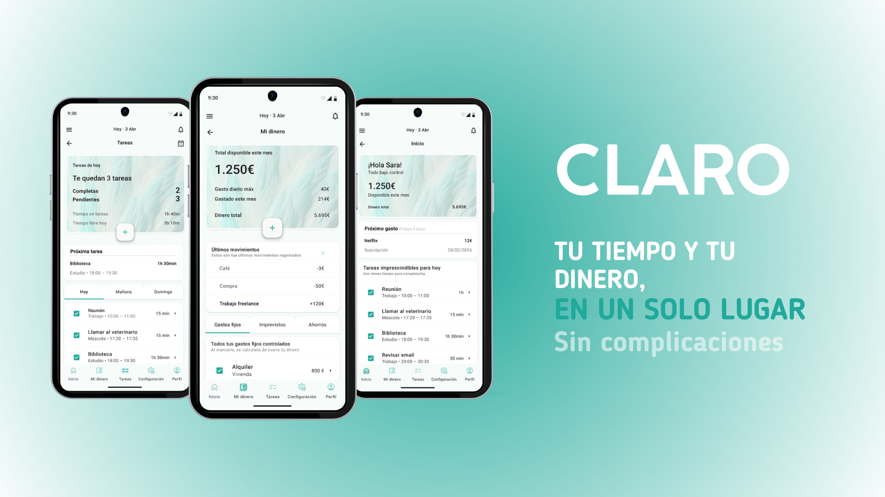
Rol
UX/UI Designer
Alcance
Proyecto individual
Tipo
App móvil conceptual
Herramientas
Figma, Canva
Proceso
Design Thinking
01 · Problema
Gestionar el día a día se vuelve pesado cuando todo está separado.
CLARO nace de una necesidad cotidiana: muchas personas organizan su dinero, sus tareas y su planificación diaria con herramientas distintas.
Esta fragmentación puede provocar sensación de desorden, dificultad para saber cuánto dinero queda realmente disponible y más carga mental al tomar decisiones pequeñas durante el día.
Síntesis inicial
Problema, objetivo y solución
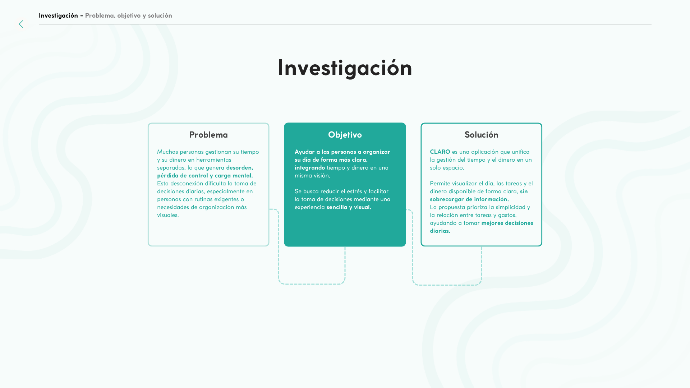
02 · Objetivo
Diseñar una experiencia que ayude a decidir mejor, con menos ruido mental.
El objetivo fue diseñar una app móvil que centralizara dinero y tareas en una interfaz sencilla, visual y calmada, priorizando la comprensión rápida por encima de añadir demasiadas funcionalidades.
03 · Investigación
Entender cómo las personas organizan dinero y tiempo.
La investigación ayudó a detectar un patrón claro: las personas no necesitaban una herramienta más compleja, sino una forma más simple de ver lo esencial.
Desk research
Análisis de hábitos digitales, organización personal y productos relacionados con finanzas, tareas y planificación diaria.
Benchmarking y reseñas
Revisión de apps similares y comentarios de usuarios para detectar patrones de frustración, necesidades y oportunidades.
Entrevistas
Conversaciones con usuarios para comprender rutinas, hábitos de organización, puntos de dolor y carga mental.
Desk research
Apps similares y reseñas
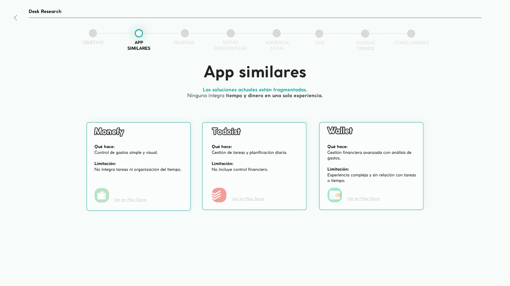
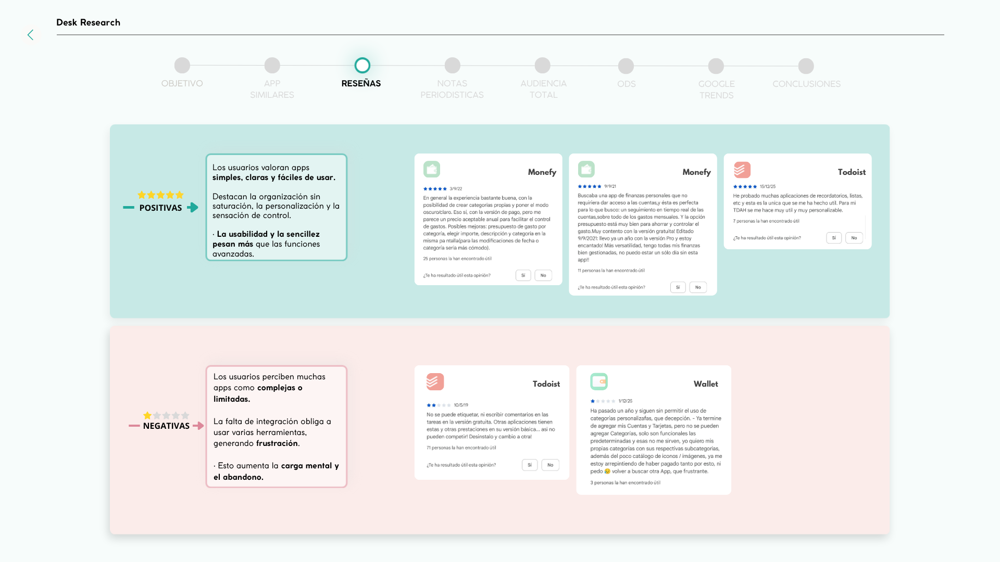
Conclusiones de investigación
Necesidad clara: simplicidad y centralización
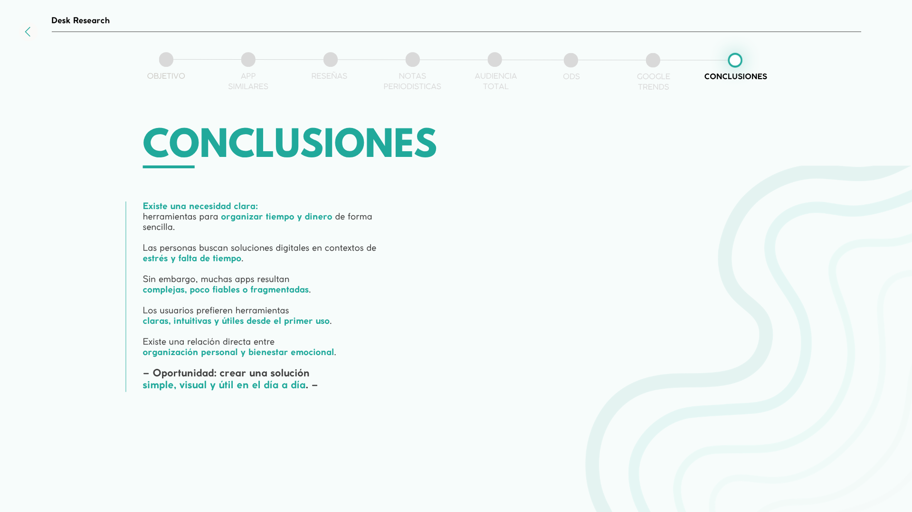
Insight principal
La claridad pesa más que la cantidad de funciones.
El análisis mostró que una experiencia útil no tenía que ser más compleja, sino más clara. La oportunidad estaba en unir información esencial y presentarla de forma comprensible.
Las personas suelen combinar varias herramientas para organizarse.
Las interfaces con demasiada información pueden generar rechazo.
La conexión entre dinero y planificación diaria aparece como oportunidad de diseño.
Entrevistas
Hallazgos principales
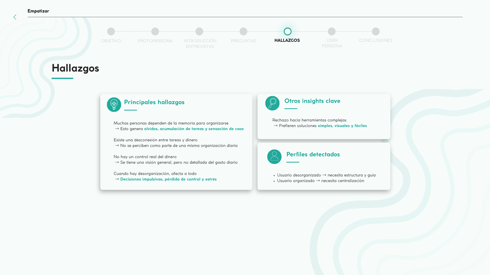
04 · User persona
Dar forma a una usuaria con necesidades reales.
A partir de los hallazgos de investigación, se construyó una user persona que representa a personas con rutinas activas, herramientas fragmentadas y necesidad de claridad diaria.
Frase clave
“Siento que hago muchas cosas al día, pero no tengo claro ni el tiempo ni el dinero que realmente tengo disponibles.”
Necesidades
Tener una visión clara y conjunta de su tiempo, tareas y dinero disponible.
Frustraciones
Usar varias apps, olvidar tareas o gastos y sentir que todo está disperso.
Motivaciones
Organizar su día con más calma, orden y sensación de control.
Persona
Laura · 32 años
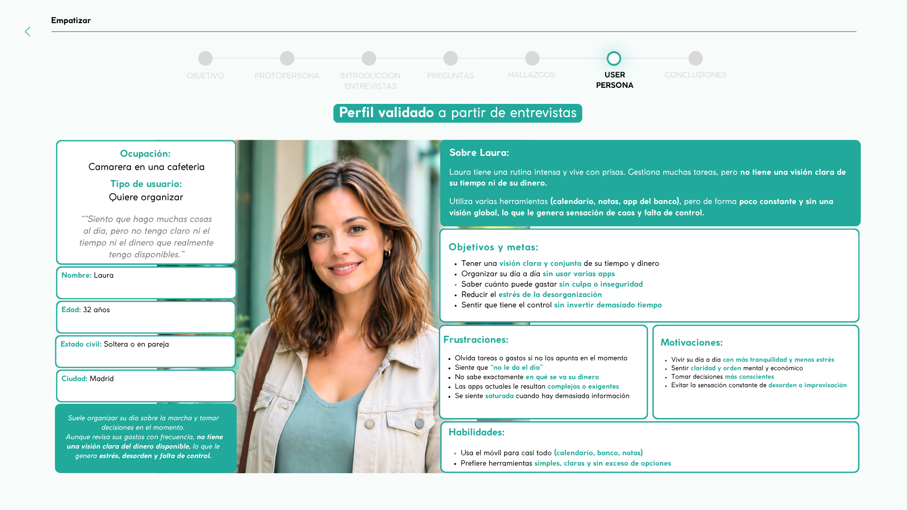
05 · Definición y MVP
Convertir los hallazgos en una solución simple y accionable.
Tras la investigación, CLARO se definió como una experiencia enfocada en lo esencial: visualizar el dinero disponible, registrar movimientos de forma rápida y conectar esa información con la organización diaria.
Punto de vista
Las personas necesitan una forma clara de visualizar dinero y tareas en un solo lugar para reducir carga mental y tomar mejores decisiones diarias.
MVP
Funciones esenciales
01
Dinero disponible
Mostrar de forma rápida cuánto dinero puede usar la persona.
02
Registro de gastos
Añadir un gasto o ingreso de forma rápida desde la sección de dinero.
03
Resumen mensual
Ver una lectura simple del estado económico del mes.
04
Tareas principales
Organizar tareas por día para facilitar la planificación diaria.
05
Centralización de tiempo y dinero
Unificar información clave en una misma experiencia para reducir dispersión y carga mental.
06 · Arquitectura y flujos
Una navegación sencilla para reducir fricción.
La arquitectura se organizó alrededor de las áreas principales del producto, priorizando acceso rápido a dinero, tareas y acciones frecuentes como registrar un gasto.
Arquitectura principal
Secciones de la app
01
Inicio
02
Mi dinero
03
Tareas
04
Calendario
05
Perfil
Task flow principal
Añadir un gasto
Entrar en la pantalla “Mi dinero”
Pulsar el botón principal para añadir movimiento
Completar nombre, importe y categoría
Guardar y recibir confirmación
Decisión de diseño
El registro no debía sacar al usuario del contexto.
Por eso la acción de añadir gasto se planteó mediante un bottom sheet: la persona puede completar la acción de forma rápida y volver al resumen de dinero sin sentir que abandona la pantalla principal.
Patrón usado: CTA / FAB + Bottom sheet + Snackbar
Acción visible, formulario contextual y feedback inmediato tras guardar.
Validación de estructura
Card sorting y dendrograma
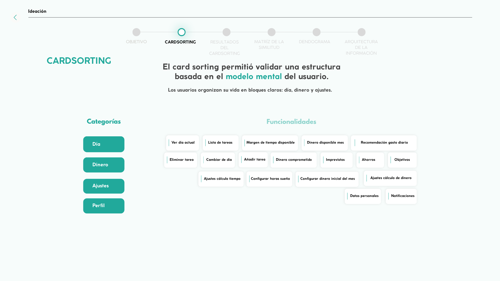
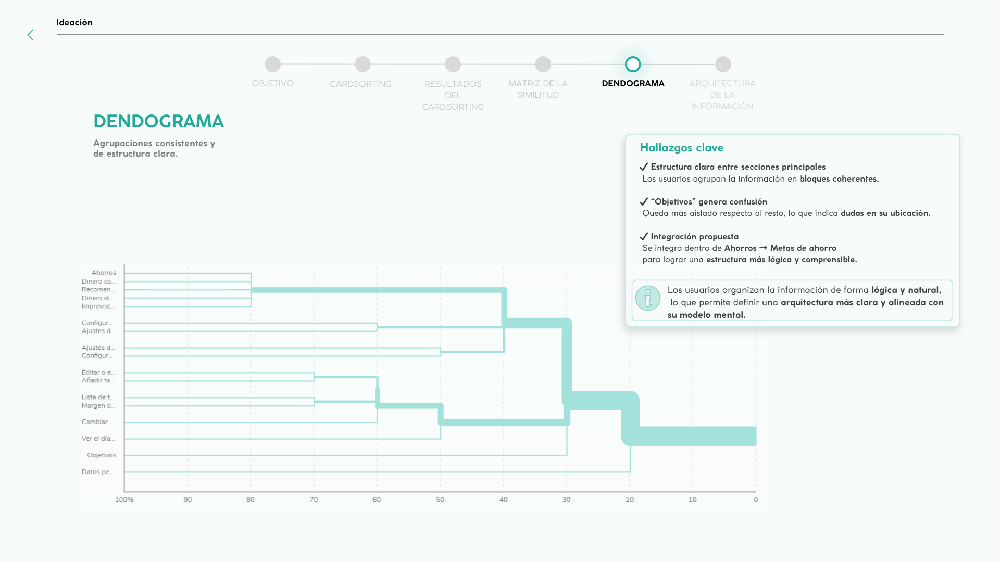
Flujo principal
Task flow & User flow · Añadir gasto
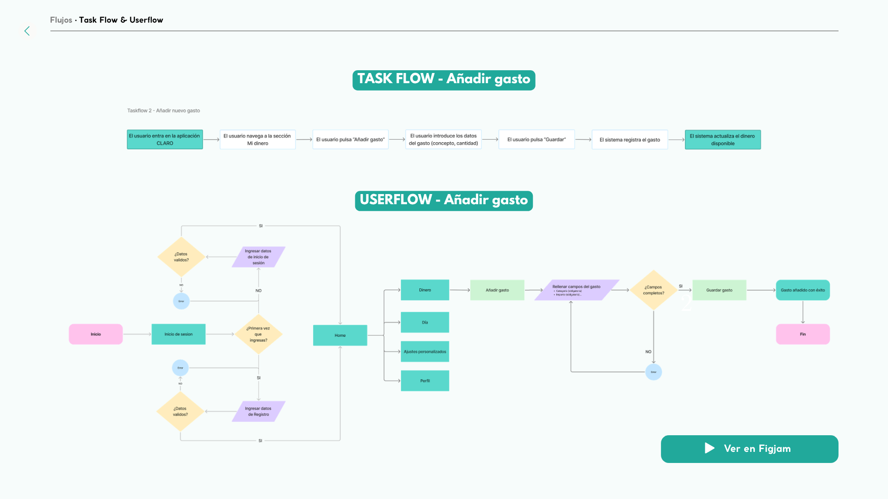
07 · Wireframes y evolución
De ideas rápidas a una interfaz clara y usable.
El proceso comenzó explorando pantallas en baja fidelidad para validar estructura, jerarquía visual y flujo antes de avanzar hacia una interfaz más definida.
Evolución visual
Boceto → wireframe → prototipo
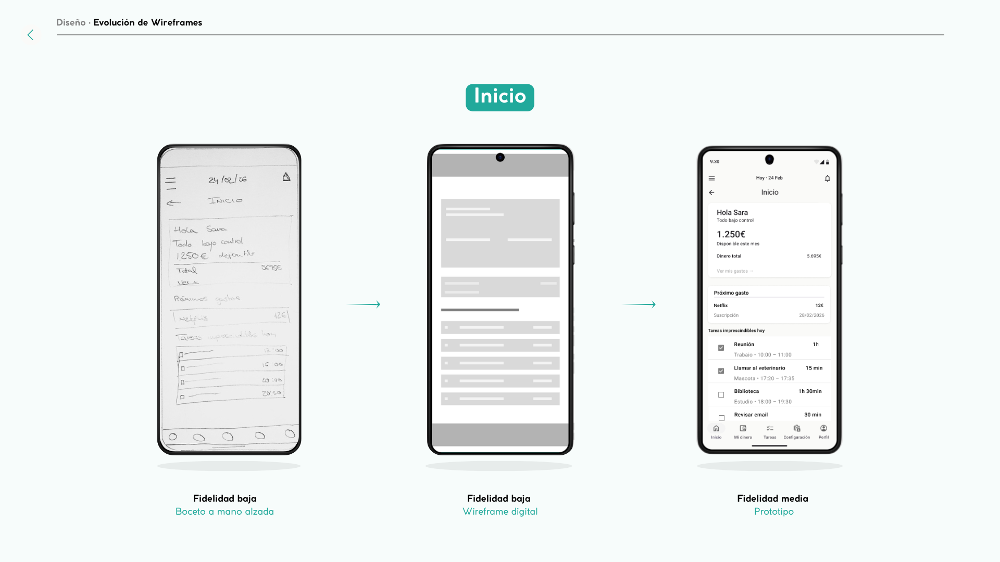
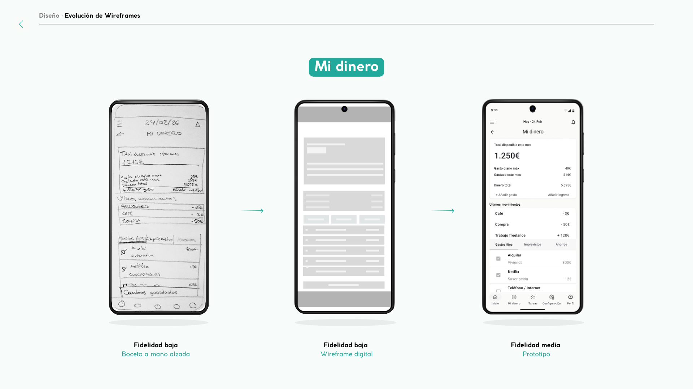
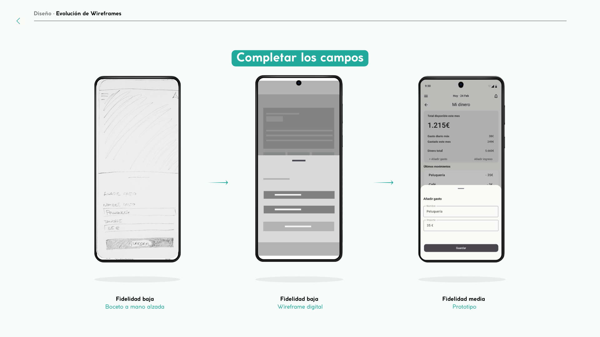
Decisión clave de diseño
Reducir información para mejorar comprensión.
Durante la evolución del diseño se priorizó mostrar lo esencial: dinero disponible, próximas tareas y acciones principales. Esta decisión ayudó a reducir carga cognitiva y a hacer que la interfaz se entendiera con mayor rapidez.
08 · Sistema visual / UI Kit
Un sistema visual pensado para transmitir claridad y calma.
El UI Kit se construyó con una estética limpia y mobile-first, tomando como referencia Material Design 3 para mantener patrones reconocibles, consistencia visual y facilidad de uso en Android.
Principio visual
Reducir ruido visual para que la persona pueda entender su dinero y su tiempo en segundos.
Design tokens
Color y base visual
#21A99B
Color principal · acciones y estados activos
#F7FCFB
Fondo suave · blanco con subtono turquesa
#FFFFFF
Cards · lectura limpia del contenido
#101828
Texto principal · contraste y jerarquía
UI Kit completo
Componentes y sistema visual
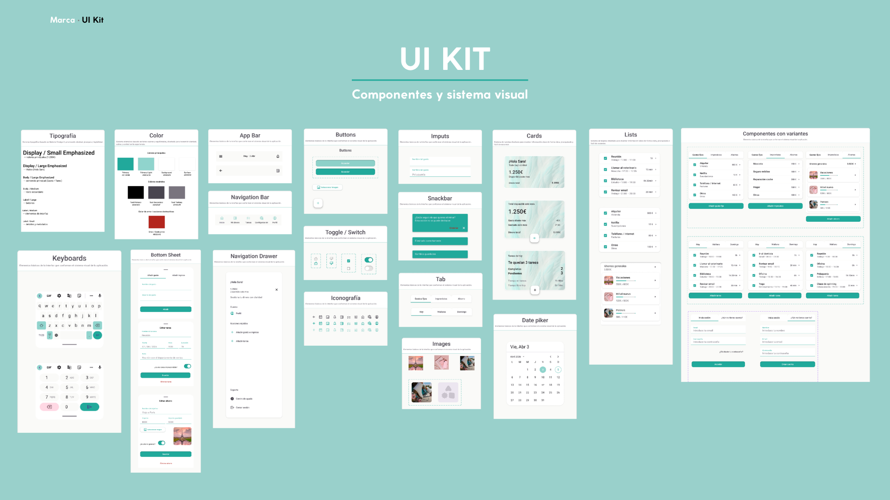
Componentes principales
Cards de resumen
Muestran información clave como dinero disponible, próximos gastos y estado de tareas.
Tabs
Organizan el contenido por categorías como gastos fijos, imprevistos, ahorros o días.
Bottom navigation
Permite moverse entre las áreas principales de la app con un patrón reconocible.
Bottom sheet
Permite añadir gastos o ingresos sin abandonar el contexto de la pantalla.
FAB / CTA principal
Acción visible para registrar movimientos de forma rápida desde la sección adecuada.
Snackbar
Feedback inmediato tras guardar, editar o eliminar información.
Decisión de interfaz
Patrones nativos para que la app se sienta familiar desde el primer uso.
El uso de Material Design 3 ayudó a mantener consistencia, accesibilidad y patrones reconocibles, evitando que el usuario tuviera que aprender una lógica nueva.
Resultado buscado
Una interfaz moderna, calmada y predecible, donde las acciones principales se entienden rápido.
09 · Prototipo final
La experiencia final de CLARO.
El prototipo final permite recorrer el flujo principal de la app: iniciar sesión, consultar el estado del dinero, añadir un gasto y recibir feedback inmediato.
Flujo principal
01 · Iniciar sesión
02 · Revisar dinero disponible
03 · Añadir gasto
04 · Ver actualización y confirmación
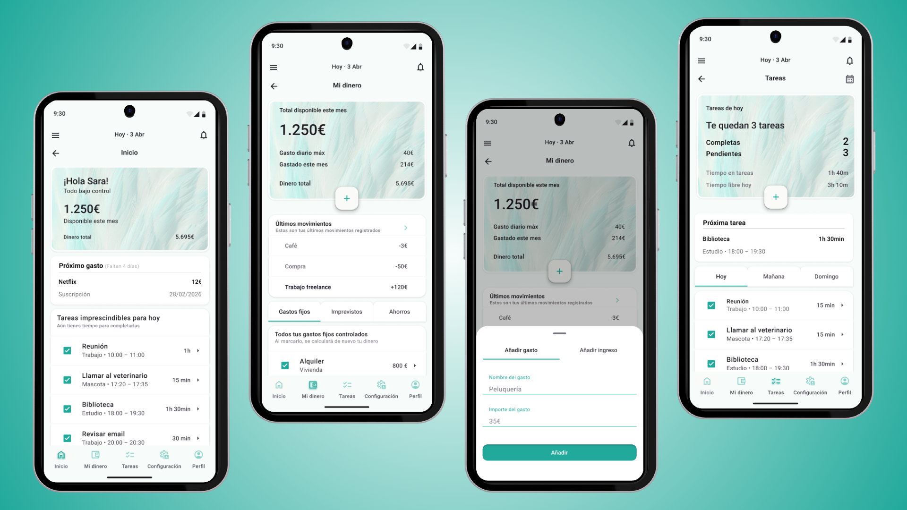
10 · Testing e iteración
Validar si la acción principal era realmente evidente.
El testing se centró en evaluar si los usuarios podían completar la acción clave sin fricción: registrar un gasto de forma rápida y natural.
Hipótesis
Si la acción principal no es visible, el usuario puede no saber cómo avanzar dentro de la app.
Resultado clave
Todos completaron la tarea, pero se detectaron dudas iniciales al localizar “Añadir gasto”.
Participantes
5
Tareas
Login, añadir gasto y revisar dinero
Tasa de éxito
100%
Problema detectado
Baja visibilidad del CTA principal
Evidencia del test
Registro de usuarios y métricas
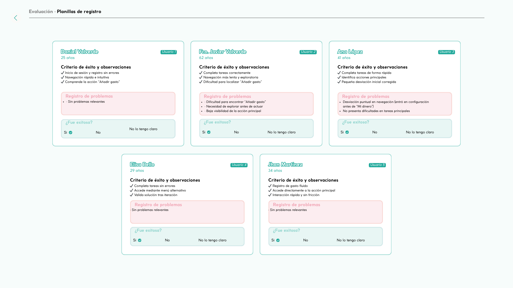
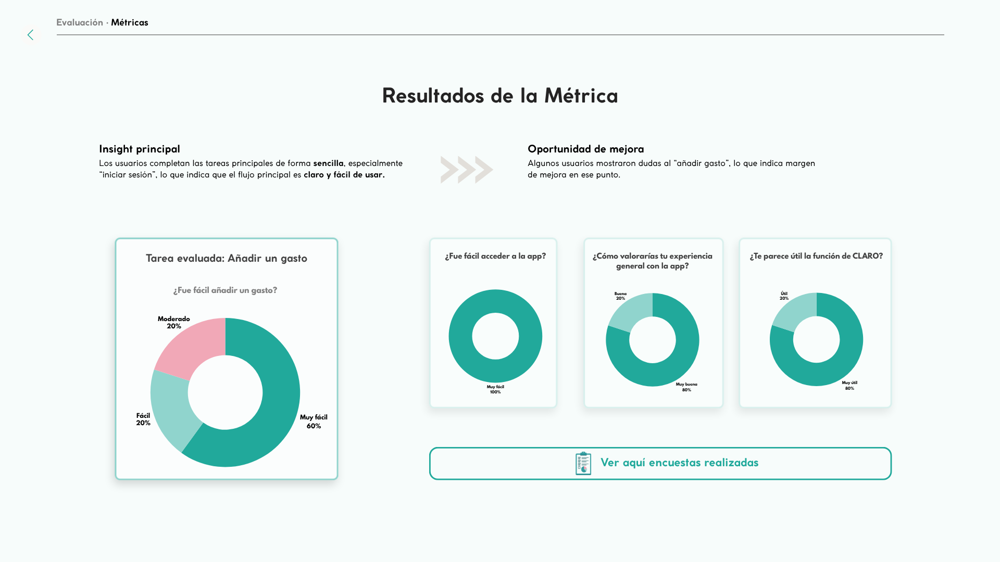
Iteración principal
Antes / después del CTA principal
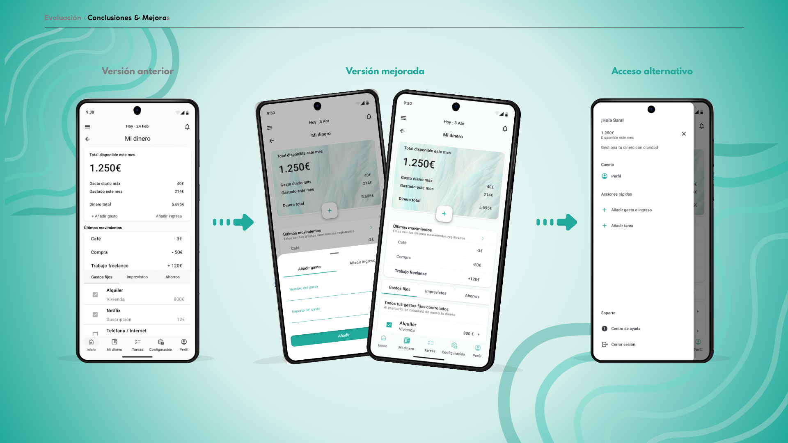
Insight de diseño
La visibilidad de una acción es tan importante como su funcionalidad.
Aunque la funcionalidad estaba planteada correctamente, la falta de jerarquía visual hacía que algunos usuarios tardaran en identificar el siguiente paso. Mejorar la visibilidad del CTA fue clave para hacer la experiencia más directa.
11 · Resultado y aprendizajes
Una experiencia más clara para organizar dinero y tiempo.
CLARO terminó como un prototipo funcional de app móvil que conecta dos necesidades cotidianas: saber cuánto dinero queda disponible y organizar las tareas principales del día sin añadir más carga mental.
Resultado final
Un producto conceptual con flujo principal validado, sistema visual consistente y una propuesta clara centrada en simplicidad.
01
Simplicidad antes que exceso
Aprendí que una buena solución no siempre necesita más funciones, sino una jerarquía más clara.
02
La acción principal debe guiar
Un CTA puede estar presente, pero si no destaca visualmente, el usuario puede no entender el siguiente paso.
03
Testear cambia el diseño
Las pruebas permitieron detectar fricciones concretas y convertir una interfaz correcta en una experiencia más usable.
Cierre
Este proyecto me ayudó a entender que diseñar una app no es solo hacer pantallas bonitas: es ordenar información, reducir fricción y tomar decisiones visuales al servicio del usuario.